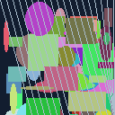
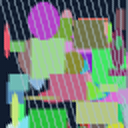

64x64 input to 128x128 output. Original held-out procedural scene, seed 100. Reconstructed images were read back from the RTX 2080 Ti D3D12 compute pass.


Synthetic evidence only. See quality.json for PSNR. The native filter is linear; neural and engine integration remain future work.